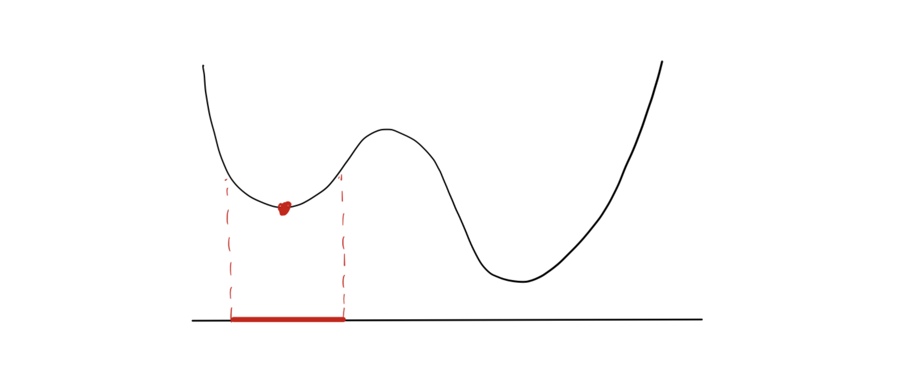
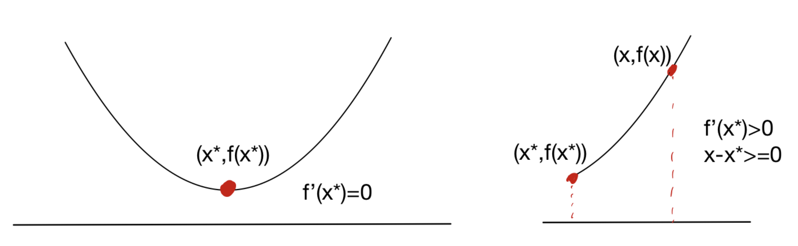
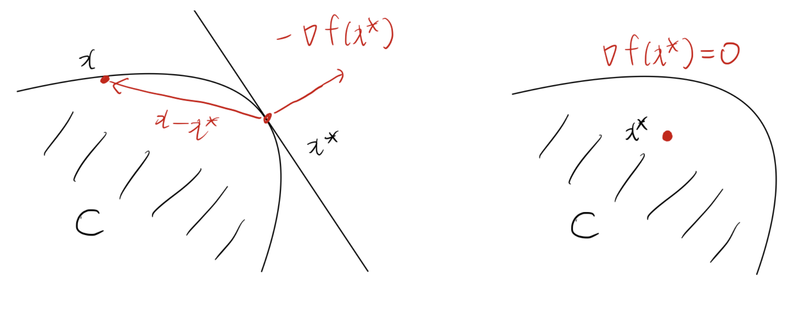
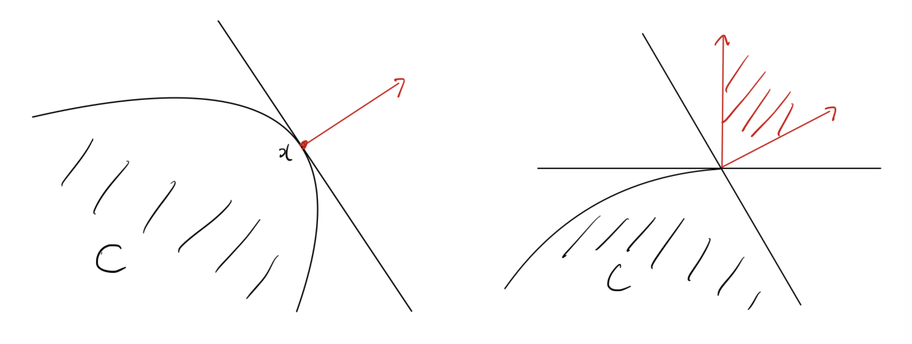
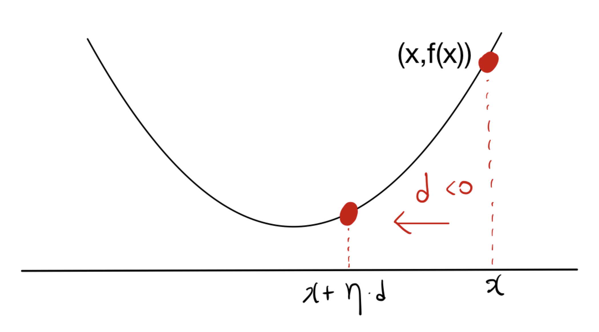
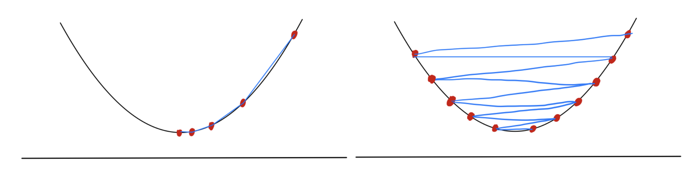

1. Introduction
- 최적화 문제, 특히 머신러닝과 계량경제학의 추정 문제를 풀다 보면 제약이 있는 볼록 최적화(Convex Optimization) 문제와 마주하게 됩니다. 이번 포스트에서는 서울대학교 수리과학부 이다빈 교수님의 수리 및 수치 최적화 강의(Lecture 7)를 바탕으로, 최적화 이론의 기둥이 되는 원뿔 쌍대성(Conic Duality)을 이해하고, 볼록 최소화 문제의 최적성 조건(Optimality Conditions)을 유도해 보겠습니다. 나아가 머신러닝의 가장 기본이 되는 알고리즘인 경사하강법(Gradient Descent)의 원리를 테일러 전개(Taylor Approximation) 관점에서 직관적으로 해석해 봅니다.
2. Conic Programming & Duality (원뿔 계획법과 쌍대성)
2.1 Conic Programming (원뿔 계획법)
원뿔 계획법(Conic Program, CP)은 내부가 비어있지 않고(nonempty interior), 뾰족하며(pointed), 닫힌(closed) 볼록 원뿔(convex cone) \(K\)를 이용해 정의되는 최적화 문제입니다.
기본적인 원뿔 계획법의 형태는 다음과 같습니다: \[\text{minimize} \quad c^\top x\] \[\text{subject to} \quad Ax - b \in K\]
일반적으로 벡터가 원뿔 \(K\)에 속한다는 것은 “\(\ge_K\)”라는 기호를 사용해 나타낼 수 있습니다. 즉, \(Ax - b \in K\)는 \(Ax - b \ge_K 0\) 혹은 \(Ax \ge_K b\)와 동치이며, 이를 통해 문제를 제약식의 관점에서 유연하게 바라볼 수 있습니다. 원뿔 \(K\)의 형태에 따라 문제의 종류가 다음과 같이 분류됩니다:
- \(K = \mathbb{R}_+^n\) 인 경우: 가장 친숙한 선형 계획법(Linear Program, LP)으로 축소됩니다.
- \(K\)가 이차 원뿔(Second-order cone)인 경우: 이차 원뿔 계획법(SOCP)이 됩니다.
- \(K\)가 양의 준정부호 원뿔(Positive semidefinite cone)인 경우: 반정부호 계획법(SDP)이 됩니다.
2.2 Dual Cone (쌍대 원뿔)
원뿔 계획법의 쌍대 문제를 정의하기 위해서는 먼저 쌍대 원뿔(Dual cone)의 개념이 필요합니다. \(K \subseteq \mathbb{R}^n\)의 쌍대 원뿔 \(K^*\)는 다음과 같이 정의됩니다: \[K^* = \{y \in \mathbb{R}^n : y^\top x \ge 0 \quad \forall x \in K\}\]
즉, \(K\) 내의 모든 원소와 내적했을 때 음수가 되지 않는 벡터들의 집합입니다.
자기 쌍대성(Self-dual): 일부 원뿔은 자기 자신과 쌍대 원뿔이 일치하는 성질을 가집니다. 대표적으로 음이 아닌 직교 좌표계(nonnegative orthant) \(\mathbb{R}_+^d\)의 쌍대 원뿔은 \(\mathbb{R}_+^d\) 자신입니다.
양의 준정부호 원뿔 \(\mathbb{S}_+^d\) 역시 자기 쌍대(self-dual)이며, 두 행렬의 내적 \(\text{tr}(X^\top S) \ge 0\) 조건을 만족합니다.
이차 원뿔 또한 자기 쌍대 원뿔입니다.
정리: 원뿔 \(K\)가 내부가 비어있지 않고 뾰족한 닫힌 볼록 원뿔이라면, 쌍대 원뿔 \(K^*\) 역시 동일한 성질을 가지며, 나아가 \((K^*)^* = K\)를 만족합니다.
2.3 Derivation of Dual Conic Program (쌍대 문제 유도)
- 주어진 원뿔 계획법(CP)의 하한(lower bound)을 구하는 과정에서 쌍대 문제(Dual-CP)가 자연스럽게 도출됩니다.
- \(Ax - b \in K\)를 만족하는 \(x\)와 \(y \in K^*\)를 생각해보면, 쌍대 원뿔의 정의에 의해 \(y^\top(Ax - b) \ge 0\)가 성립합니다.
- 이를 전개하면 \(y^\top Ax \ge y^\top b\)가 되며, 만약 제약조건 \(A^\top y = c\)를 추가로 만족한다면, \(c^\top x = y^\top Ax \ge y^\top b\)가 성립합니다.
- 따라서 원문제의 목적함수 \(c^\top x\)의 값을 하한에서 근사하기 위해 다음과 같은 쌍대 문제를 구성할 수 있습니다: \[\text{maximize} \quad b^\top y\] \[\text{subject to} \quad A^\top y = c, \quad y \in K^*\]
2.4 Conic Duality Theorem (원뿔 쌍대성 정리)
- 약한 쌍대성(Weak Duality): 항상 쌍대 문제(Dual-CP)의 최적값은 원문제(CP) 최적값의 하한(lower bound)이 됩니다.
- 강한 쌍대성(Strong Duality)을 위한 강한 타당성(Strict Feasibility): 원문제와 쌍대 문제의 최적값이 완전히 일치(Strong duality)하기 위해서는 특수한 조건이 필요합니다. 해 \(x\)가 \(Ax - b\)가 \(K\)의 내부(interior)에 포함될 때 이를 강하게 타당한(strictly feasible) 해라고 부릅니다 (\(Ax - b >_K 0\)). (선형 계획법에서는 \(Ax > b\)인 경우입니다.)
- 쌍대성 정리:
- (CP)가 강하게 타당하고 유계(bounded)라면, (dual-CP)는 풀이 가능하며 두 최적값은 같습니다.
- (dual-CP)가 강하게 타당하고 유계라면, (CP)는 풀이 가능하며 두 최적값은 같습니다.
- 이는 라그랑주 쌍대성(Lagrangian duality)에서 배울 슬레이터 조건(Slater’s condition)과 본질적으로 유사한 개념입니다.
- LP 쌍대성의 특수성: 선형 계획법(LP)의 경우 Slater 조건(강한 타당성)이 필요하지 않으며, 타당하고 유계이기만 하다면 강한 쌍대성이 성립합니다.
3. Optimality Conditions for Convex Minimization
3.1 Local vs Global Optimality
- 볼록 최적화 문제의 가장 아름다운 특성 중 하나는 “어떠한 국소 최적해(locally optimal solution)도 전역 최적해(globally optimal solution)가 된다”는 정리입니다. 볼록하지 않은(nonconvex) 문제에서는 국소 최적해가 전체의 최적이 아닐 수 있습니다.

3.2 First-order Optimality Condition (제1계 최적성 조건)
미분 가능한 목적 함수 \(f(x)\)를 가진 제약 볼록 최적화 문제 \(\min_{x \in C} f(x)\)를 생각해보겠습니다.
단일 변수(Univariate) 함수의 경우 최적성 조건은 다음과 같이 나뉩니다.

보다 일반화하여 다차원 공간에서 점 \(x^* \in C\)가 최적해일 필요충분조건은 다음과 같습니다: \[\nabla f(x^*)^\top (x - x^*) \ge 0 \quad \forall x \in C\]
만약 제약이 없는(unconstrained) 최적화, 즉 \(C = \mathbb{R}^d\)라면, 이는 단순히 \(\nabla f(x^*) = 0\)이 됨을 의미합니다.

- 핵심 직관은 \(x^*\)가 최적이라면, 집합 \(C\) 내에서 \(x^*\)로부터 \(f\)가 감소하는 방향으로 더 이상 나아갈 수 없어야 한다는 것입니다.
3.3 Normal Cones (법선 원뿔)
- 최적성 조건을 다른 기하학적 각도에서 해석하기 위해 법선 원뿔(Normal cone)의 개념을 도입합니다. 점 \(x \in C\)에서의 법선 원뿔 \(N_C(x)\)는 다음과 같이 정의됩니다: \[N_C(x) = \{g \in \mathbb{R}^d : g^\top (y - x) \le 0 \quad \forall y \in C\}\]

- 이러한 법선 원뿔을 이용하면 앞서 유도한 제1계 최적성 조건 \(\nabla f(x^*)^\top (x - x^*) \ge 0\)는 다음과 같이 매우 간결하고 아름답게 표현됩니다: \[-\nabla f(x^*) \in N_C(x^*)\]
- 즉, 음의 기울기(가장 가파른 하강 방향) 방향이 집합 \(C\)의 법선 원뿔 내에 포함되어야 함을 뜻합니다.
4. Projections (사영)
볼록 최적화 알고리즘(예: Projected Gradient Descent)에서 자주 등장하는 개념이 바로 어떤 점 \(p\)를 볼록 집합 \(C\)로 사영(Projection)하는 것입니다. 사영 \(\text{Proj}_C(p)\)은 \(p\)로부터 거리를 최소화하는 집합 \(C\) 내의 점 \(x\)를 찾는 문제입니다: \[\text{minimize}_{x \in C} \quad \|x - p\|_2^2\]
제1계 최적성 조건을 이 사영 문제에 적용하면 재미있는 성질(Non-expansiveness)을 증명할 수 있습니다. 두 점 \(u, v\)와 각각의 사영 \(\text{Proj}_C(u), \text{Proj}_C(v)\)에 대해 다음 부등식들이 성립합니다:
- \((u - \text{Proj}_C(u))^\top (\text{Proj}_C(v) - \text{Proj}_C(u)) \le 0\)
- \((v - \text{Proj}_C(v))^\top (\text{Proj}_C(u) - \text{Proj}_C(v)) \le 0\)
두 식을 더하고 코시-슈바르츠 부등식(Cauchy-Schwarz inequality)을 적용하면, 최종적으로 사영 함수가 거리를 팽창시키지 않는다는 Non-expansive 성질을 얻게 됩니다: \[\|\text{Proj}_C(u) - \text{Proj}_C(v)\|_2 \le \|u - v\|_2\]
5. Introduction to Gradient Descent (경사하강법 입문)
- 이제 머신러닝 최적화의 기본 알고리즘인 경사하강법에 대해 알아보겠습니다.
5.1 Descent Directions (하강 방향)
- 함수 \(f:\mathbb{R}^d \rightarrow \mathbb{R}\)가 주어졌을 때, 영벡터가 아닌 \(d \in \mathbb{R}^d \setminus \{0\}\)가 점 \(x\)에서의 하강 방향(descent direction)이 되려면 다음을 만족해야 합니다: \[f(x + \eta d) < f(x) \quad \text{for some strictly positive } \eta\]

\(f\)가 미분 가능하다면 방향 도함수의 정의에 의해 다음이 성립합니다: \[\lim_{\eta \rightarrow 0+} \frac{f(x + \eta d) - f(x)}{\eta} = \nabla f(x)^\top d\]
즉, \(\nabla f(x)^\top d\)는 점 \(x\)에서 방향 \(d\)로 이동할 때의 함수 \(f\)의 변화율을 의미합니다. 따라서 영이 아닌 벡터 \(d\)가 하강 방향이기 위한 필요충분조건은 다음과 같습니다: \[\nabla f(x)^\top d < 0\]
5.2 Algorithm & Step Size (알고리즘 및 스텝 사이즈)
- 일반적인 하강 방법론은 다음과 같이 반복(iteration)합니다:
- \(x_1 \in \text{dom}(f)\) 초기화
- \(t = 1, \dots, T\)에 대해:
- 하강 방향 \(d_t\)를 구한다.
- \(x_{t+1} = x_t + \eta_t d_t\) (이때 \(\eta_t > 0\)는 스텝 사이즈)
- 이때 적절한 스텝 사이즈 \(\eta_t\)를 선택하는 것이 알고리즘의 안정성에 결정적인 영향을 미칩니다.

- 스텝 사이즈 결정 전략은 대표적으로 다음과 같습니다:
- Constant step size: 모든 \(t\)에 대해 \(\eta_t = \eta\)로 고정.
- Exact line search: 매 스텝마다 완벽한 크기를 계산: \(\eta_t = \arg\min_{\eta \ge 0} f(x_t + \eta d_t)\).
- Backtracking line search: 조건 \(f(x + \eta d_t) < f(x) + \alpha \eta \nabla f(x)^\top d_t\)가 만족될 때까지 초기 스텝 사이즈를 점진적으로 줄여나가는 방식입니다 (\(0 < \alpha, \beta < 1\)).
5.3 Gradient Descent Algorithm (경사하강법)
- 가파른 하강 방향(steepest descent direction)은 바로 음의 기울기 방향인 \(d = -\nabla f(x)\)입니다. 이를 대입한 경사하강법(Gradient Descent)의 업데이트 규칙은 아래와 같습니다: \[x_{t+1} = x_t - \eta_t \nabla f(x_t)\]
예제: \(f(x) = 2x^2 + 3x\)
- 해당 이차 함수의 도함수는 \(\nabla f(x) = 4x + 3\)이므로, 분석적인 최적해는 \(x^* = -3/4\)입니다. 경사하강법을 적용하면, 일정한 스텝 사이즈 \(\eta\)에 대해 점화식은 다음과 같이 정의됩니다: \[x_{t+1} = x_t - \eta (4x_t + 3)\]
- 적절한 \(\eta\)가 선택되었다면 \(x_t\)는 점차 \(-3/4\)로 수렴하게 됩니다.
5.4 Taylor Approximation Interpretation (테일러 전개 관점의 해석)
경사하강법의 업데이트 규칙이 단순한 경험적 직관이 아닌 강력한 수학적 근거를 가지고 있음을 테일러 전개(Taylor approximation)를 통해 확인할 수 있습니다.
점 \(x_t\) 근방에서 함수 \(f(x)\)를 1차 테일러 전개로 근사하면 다음과 같습니다: \[f(x) \approx f(x_t) + \nabla f(x_t)^\top (x - x_t)\]
하지만 단순한 1차 근사는 \(x\)가 \(x_t\)에서 멀어질수록 오차가 커집니다. 따라서, 다음 이동 지점 \(x\)가 현재 위치 \(x_t\)에서 너무 멀어지지 않도록 패널티(proximity term)를 부여하여 근사 모델을 개선할 수 있습니다: \[f(x) \approx f(x_t) + \nabla f(x_t)^\top (x - x_t) + \frac{1}{2\eta_t} \|x - x_t\|_2^2\]
놀랍게도 위 2차 근사식을 \(x\)에 대하여 최소화(미분하여 0이 되는 지점을 탐색)하면 정확히 경사하강법의 업데이트 식인 \(x_{t+1} = x_t - \eta_t \nabla f(x_t)\)를 얻게 됩니다. 즉, 경사하강법은 “현재 점에서의 1차 함수 근사를 믿되, 너무 멀리 이동하지 않도록 보폭을 제한하여 최소점을 찾아나가는 과정”으로 우아하게 해석할 수 있습니다.